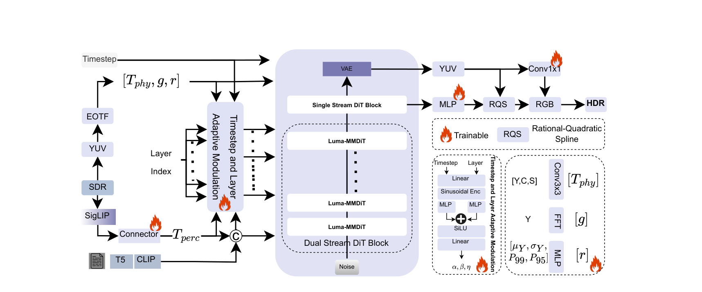
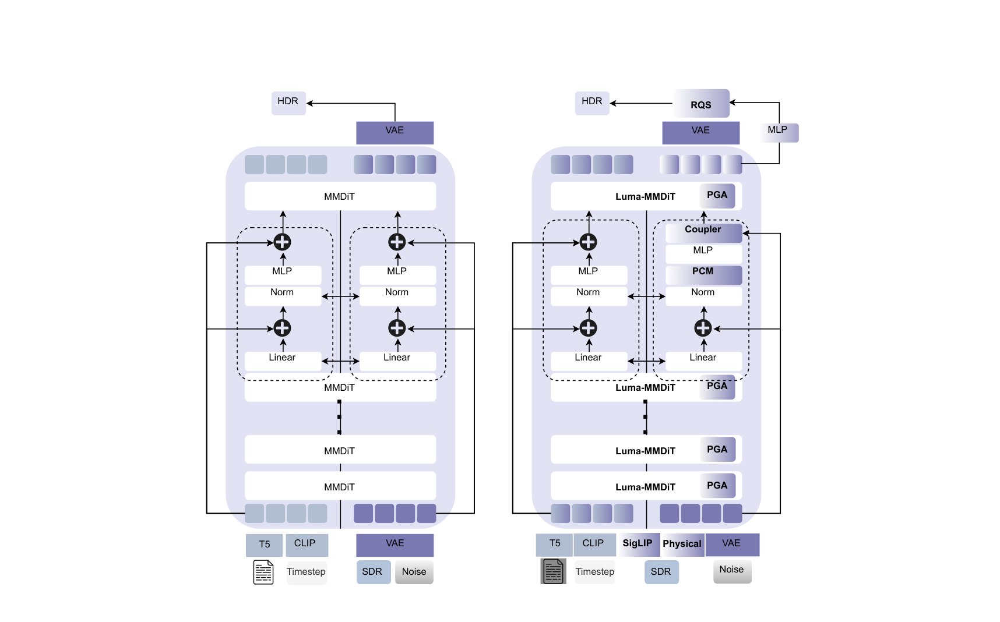

Abstract
The rapid adoption of HDR-capable devices has created a pressing need to convert 8-bit Standard Dynamic Range content into perceptually and physically accurate 10-bit HDR. Existing inverse tone-mapping (ITM) methods often rely on fixed tone-mapping operators that struggle to generalize to real-world degradations, stylistic variations, and camera pipelines — producing clipped highlights, desaturated colors, or unstable tone reproduction.
LumaFlux is the first physically and perceptually guided diffusion transformer for SDR→HDR reconstruction, built by adapting a large pretrained DiT without retraining its weights. It introduces (1) a Physically-Guided Adaptation module injecting luminance, spatial, and frequency cues into attention through gated low-rank residuals; (2) a Perceptual Cross-Modulation layer stabilizing chroma and texture via FiLM conditioning on SigLIP features; (3) an HDR Residual Coupler fusing both signals under a timestep- and layer-adaptive schedule; and (4) a Rational-Quadratic Spline decoder reconstructing smooth, interpretable tone fields for highlight and exposure expansion. We further curate the first large-scale SDR–HDR training corpus and establish Luma-Eval, a new evaluation benchmark with HDR references and expert-graded SDR.
Method
SDR formation is a lossy chain — tone mapping, BT.2020→709 gamut compression, quantization, and codec noise. Inverting it needs both physical priors (luminance and color constraints) and perceptual priors (semantics and realism). LumaFlux gets the latter for free from a frozen Flux backbone and injects the former through four lightweight, zero-initialized modules scheduled by a shared timestep–layer conditioner Ψ(t, ℓ): early layers and timesteps receive strong global tone gains, late ones refine highlight detail.
PGAPhysically-Guided Adaptation
Gated low-rank residuals on attention value projections, conditioned per-token and per-head on luminance, gradient, and saturation maps with FFT spectral gating — expanding highlights only where the scene demands it.
PCMPerceptual Cross-Modulation
FiLM modulation of hidden states from frozen SigLIP embeddings, enforcing color constancy and semantic coherence across illumination and content variations.
CouplerHDR Residual Coupler
Fuses physical and perceptual token residuals with a λ(t, ℓ) gate that decays as t→0: global tone first, fine highlight roll-off last — a guidance flow inside the latent manifold.
RQSRational-Quadratic Spline Decoder
A monotone, invertible, differentiable tone field that expands VAE-decoded luma into HDR with smooth highlight knees — no banding, no saturation collapse.

Architecture. The SDR input splits into physical (Tphys) and perceptual (Tperc) streams. In each Luma-MMDiT block, PGA injects luminance- and spectrum-aware low-rank updates into attention, PCM applies FiLM to normalized features, and the HDR Residual Coupler fuses both cues. A frozen VAE decoder with the RQS tone-field head reconstructs HDR in PQ/BT.2020.

Architectural paradigms. Left: direct LoRA/full fine-tuning of a DiT overfits small HDR datasets and hallucinates texture. Right: LumaFlux inserts lightweight, physically interpretable modules into the frozen MM-DiT, preserving the pretrained generative prior while enabling accurate ITM with few trainable parameters.
Dataset & Benchmark
We unify HIDROVQA (411 PGC videos), CHUG (428 UGC videos), and LIVE-TMHDR (40 studio HDR videos with expert-graded SDR) under PQ-encoded BT.2020 at a 1,000-nit mastering peak. Each HDR frame is paired with SDR variants from a composite degradation chain: 8 tone-mapping operators × CRF {23, 31, 39} compression — ≈318k pairs including 54k expert-graded references. Luma-Eval adds 20 held-out HDR sources (10 PGC + 10 UGC) evaluated under both perceptually optimized and degradation-heavy SDR conditions.
Results
Metrics in PU21 space for luminance (PSNR, SSIM), HDR domain (HDR-VDP3), and perceptual color (ΔEITP, lower is better). Best in blue.
| Method | HDRTV1K | HDRTV4K | Luma-Eval | |||||||||
|---|---|---|---|---|---|---|---|---|---|---|---|---|
| PSNR↑ | SSIM↑ | VDP3↑ | ΔE↓ | PSNR↑ | SSIM↑ | VDP3↑ | ΔE↓ | PSNR↑ | SSIM↑ | VDP3↑ | ΔE↓ | |
| HDRTVNet++ | 38.36 | 0.973 | 8.75 | 8.28 | 30.82 | 0.881 | 8.12 | 7.85 | 36.54 | 0.901 | 8.22 | 7.35 |
| ICTCPNet | 36.59 | 0.922 | 8.57 | 7.79 | 33.12 | 0.977 | 8.90 | 6.75 | 34.45 | 0.919 | 8.74 | 6.93 |
| HDRTVDM | 36.98 | 0.971 | 8.55 | 10.84 | 30.15 | 0.886 | 7.90 | 9.95 | 35.10 | 0.903 | 8.24 | 9.44 |
| HDCFM | 38.42 | 0.973 | 8.52 | 7.83 | 33.25 | 0.908 | 8.20 | 7.42 | 36.78 | 0.915 | 8.29 | 7.20 |
| Deep SR-ITM | 37.10 | 0.969 | 8.23 | 9.24 | 26.59 | 0.812 | 6.92 | 8.88 | 33.21 | 0.875 | 7.41 | 8.41 |
| FlashVSR | 35.34 | 0.883 | 6.31 | 8.79 | 33.51 | 0.846 | 5.72 | 7.51 | 34.80 | 0.857 | 5.84 | 6.23 |
| LEDiff | 36.52 | 0.872 | 5.71 | 9.13 | 32.25 | 0.863 | 5.32 | 9.66 | 31.73 | 0.859 | 5.12 | 9.85 |
| PromptIR | 32.14 | 0.954 | 9.17 | 9.59 | 28.48 | 0.898 | 9.17 | 7.00 | 34.12 | 0.913 | 8.88 | 6.82 |
| LumaFlux (ours) | 39.27 | 0.982 | 9.83 | 6.12 | 35.86 | 0.978 | 9.72 | 5.86 | 36.92 | 0.938 | 8.91 | 5.67 |
Quantitative comparison across benchmarks (Table 1 of the paper).
| Variant (ablation, 100k iters) | PSNR↑ | PSNR(Y)↑ | ΔEITP↓ | HDR-VDP3↑ | HDR-LPIPS↓ | FR-HIDROVQA↑ |
|---|---|---|---|---|---|---|
| Flux + LoRA only | 33.42 | 34.28 | 8.58 | 7.82 | 0.136 | 72.9 |
| + PGA (no spectral) | 34.94 | 35.81 | 7.62 | 8.18 | 0.122 | 75.2 |
| + PGA (spectral gating) | 35.18 | 36.02 | 7.31 | 8.29 | 0.116 | 76.3 |
| + PCM (SigLIP FiLM) | 35.89 | 36.73 | 6.78 | 8.46 | 0.107 | 78.6 |
| + RQS (linear) | 35.72 | 36.54 | 6.85 | 8.41 | 0.108 | 78.0 |
| + RQS (monotone spline) | 35.98 | 36.84 | 6.09 | 8.61 | 0.087 | 80.8 |
Component ablations on Luma-Eval (Table 3 of the paper): PGA delivers the largest gain; the monotone RQS restores perceptual smoothness and broadens effective dynamic range.
BibTeX
@article{saini2026lumaflux,
title = {LumaFlux: Lifting 8-Bit Worlds to HDR Reality with
Physically-Guided Diffusion Transformers},
author = {Saini, Shreshth and Gedik, Hakan and Birkbeck, Neil and
Wang, Yilin and Adsumilli, Balu and Bovik, Alan C.},
journal = {arXiv preprint arXiv:2604.02787},
year = {2026}
}